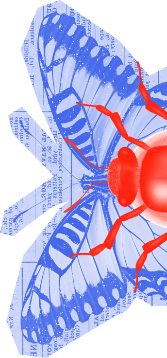

Marcel Fukayama
Movement Builder Towards a Positive Impact Economy
São Paulo, Brazil

An accelerator for leaders who want to build a new economyand are ready to be nominated.
The systems we've built are becoming brittle economically, ecologically, and socially. You feel the gap widening between where the world is heading and the future you actually want to help build. You're not ready to give up. You just need the space, the tools, and the people to make it real.
Two 5-day in-person gatherings in Paris anchor the program: one to set the stage and one to close it. In between, the cohort meets online twice a month, three hours at a time, to dive deep into one of six transversal and entangled themes shaping the world. A personal mentor plus a peer coaching group walk with you throughout and beyond the program, not just during the seven months.
Rebuilding rather than just sustaining, with strategies that replenish natural, social, and economic systems.
Driving active, creative agency, turning systemic insight into tangible, thriving ventures.
Mapping complexity, seeing the interconnected dynamics behind isolated symptoms.
Refusing easy compromises – bringing courage and responsibility into executive decisions.
Rebuilding the relational glue through psychological safety, peer accountability, and transparent alliances.
You're in business, government, civil society, or your own venture, and you feel the growing gap between the system you operate in and the leader you want to be.
You're ready to move past analysis and good intentions, and you need guidance on where to start.
You believe current systems are falling short, and you're looking for peers ready to act with integrity.
You're not after another certificate or networking event; you want a real shift in how you think, lead, and show up.
Not a role, not a title, but a grounded sense of your own values, voice, and the leader you're choosing to become.
Understand the economic, ecological, and political forces you've been living inside, and know where you can move them.
Not just intention, but the tools, resilience, and community to move to real action, even when it's uncomfortable.
Expert-led sessions and open discussion challenge the assumptions underneath what you already understand.
An experienced guide accompanies you throughout, someone who holds you accountable and walks the path with you.
Small islands of coherence can shift an entire system to a higher order. This is your island.
Upon completion, participants receive an Executive Certificate from École des Ponts Business School.
Leading within planetary boundaries rather than against them.
Where power, work, and human connection are being reshaped, and where leaders draw the line.
Leading when trust is fracturing and old models are failing.
Who creates value, who captures it, and how money is redirected.
The human, ecological, and political cost behind supply chains and markets.
Where policy, public power, and citizens can intervene.
We ask you to sit with them, to understand, feel, and let a problem change how you think, rather than just hand you a framework.
Business, political, psychology, ethics, ecology, economics: real change needs more than one way of seeing.
Inspiring professionals, indigenous communities, and local changemakers whose way of seeing the world will challenge what you thought you knew.
Every participant is guided throughout the program and supported beyond it, because your pledge is only the beginning.
Throughout the RESET journey, participants learn alongside a global group of practitioners, investors, authors, sustainability leaders and systems thinkers who bring lived experience into the program.
Movement Builder Towards a Positive Impact Economy
São Paulo, Brazil
Sustainability Strategist
Geneva, Switzerland
Investor, Entrepreneur and Author
Sydney, Australia
Author of “The Blue Sweater” and “Manifesto for a Moral Revolution.”
New York, United States
Creator of an impact investing powerhouse
United Kingdom
Executive Director of the Green Climate Fund
Seoul, Korea
Founder, Net Positive & Imagine Leaders
Italy
President Biodynamic Federation Demeter International
Cairo, Egypt
RESET uses an open-budget, participatory pricing model. The core cost of delivering the program is €8,000 per participant. Beyond this, participants contribute according to their context and capacity.
Indicative total
€8,000 core cost + estimated €2,500 contribution.
Indicative total
€8,000 core cost + estimated €4,500 contribution.
Indicative total
€8,000 core cost + estimated €7,000 contribution.
These amounts are indicative. The final fee level will be determined in February 2027, following an open-budget discussion with participants.
Travel and living expenses are not included.
If you feel called to RESET, reach out, or ask someone who knows your work to put your name forward.
Request a nomination

Leadership: RESET brings together École des Ponts Business School and Progressio Foundation. The collaboration combines executive education and leadership development with a long-standing international ecosystem of entrepreneurs, impact builders, and civic innovators, creating a space where reflection can lead to practical, responsible action.
Founded in 1989 in Rotterdam by Marcello Palazzi, alongside Paul Kloppenborg and Pjotr Hesseling, Progressio is a Dutch nonprofit that finds, connects, and supports entrepreneurs driving human progress.
Over more than 35 years, it has been at the centre of 35+ ventures and 350+ initiatives, engaging 35,000+ global decision-makers. Its focus areas include civic economy, B Corps, regenerative business, and impact investing. Palazzi co-founded B Lab Europe in 2013 and has worked with the UN, the Vatican, and world leaders on responsible business agendas.
Founded in 1987 by Célia Russo, École des Ponts Business School is the graduate business arm of the prestigious École nationale des ponts et chaussées, established in 1747 and part of Institut Polytechnique de Paris.
With the motto “In business to make a better world,” it was the first school in France to offer an English-language MBA. It offers Executive MBA and DBA programs focused on leadership, innovation, and sustainability, with 7,000+ alumni worldwide. Accredited by AMBA and AACSB, it is currently led by Dean Alon Rozen.
Get in touch, request a nomination, or explore the full program brochure.